The look overhaul on test/look-overhaul: 21–26 Nov 2026, 301 non-merge commits ahead of dev. Every frame below is a current mockup render (HUD, big-trees, tree-ground), except “before” shots, which are headless captures of the glyph renderer that dev still draws by default (Bitlands BMP sheets, a house placed with dev commands on the dev-save colony, summer noon); dashed boxes are shots still to record. Sources are regenerated by capture.mjs, thumbnails checked by check-pixels.mjs. Narration is a TTS voice in first person, and it has opinions.
Title and thumbnail
Pick: “My Colony Sim Was Ugly. So I Repainted It in 5 Days” recommended
- AMy Colony Sim Was Ugly. So I Repainted It in 5 Days — self-deprecating confession plus a constraint. Same shape as “My Indie Game is Ugly…Let's Fix That” (75.8k) and “How I Made My Horror Game Look 10x Better” (49k on a small channel). “colony sim devlog” is an autocomplete hit with almost no competition.
- B301 Commits to Make My Pixel Game Look Alive — the number is real and odd enough to read as true; weaker hook, better for a second upload or a Short title.
- CI Painted Light Into a Pixel Art Game (Shaders, Not Sprites) — technique-first, the aarthificial lane (“Deferred Lights” 461k, “Next-Gen Pixel Art” 616k). Wins search on “pixel art lighting”, loses the casual browse.
Every frame pairs the video’s hook: a close-up of the glyph look dev draws, then the same subject at the new look’s best scene. “Before” is only the dev glyph capture; “after” is only mockup scenes (HUD at night and noon, big-trees emberwood, tree-ground). Text is Jersey20 and Jacquard24 at their one-pixel sizes; all pass check-pixels.mjs.
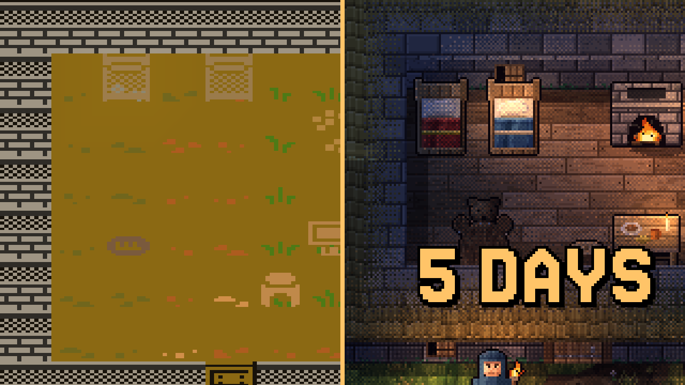
Hook pair, night pick
Glyph house close-up (dev renderer ×2) against the same house in the HUD mockup at 23:30, ×4: the video’s opening two shots as one frame. Borrows the hard vertical before/after seam from “My Indie Game is Ugly…Let’s Fix That”; no arrow, the seam does the work.
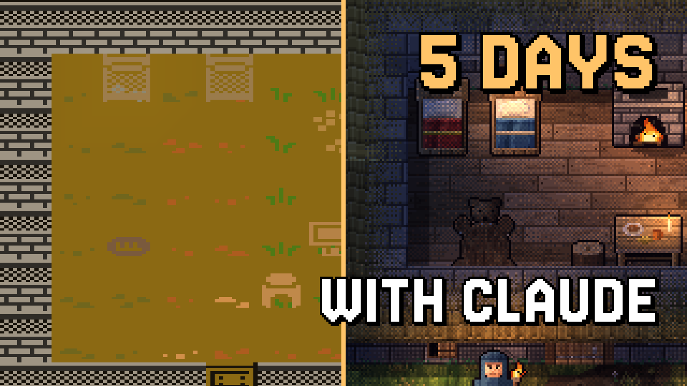
Hook pair, night, with Claude
Same frame carrying the AI disclosure in the title font. Compare with the one before it for whether the second line helps or crowds.
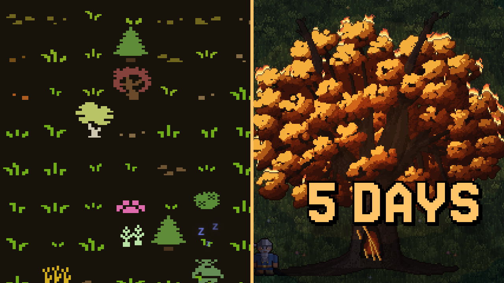
Hook pair, emberwood
Dev glyph trees ×2 against the emberwood elder at night from big-trees, ×3. The warmest, simplest silhouette in the set; it reads at 168 px as one orange shape.
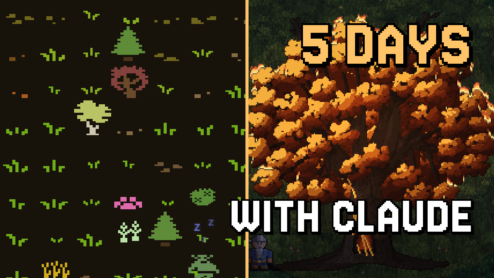
Emberwood, with Claude
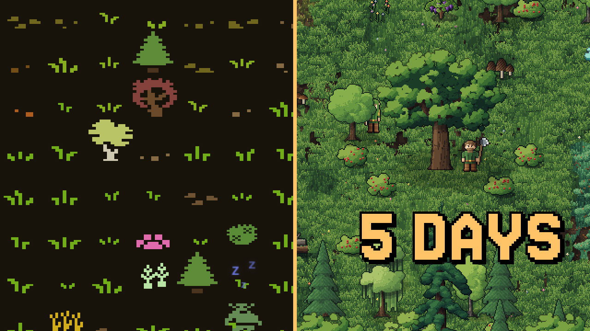
Hook pair, forest
Glyph trees against the tree-ground scene, ×2. Richest detail, but at feed size it turns to green texture.
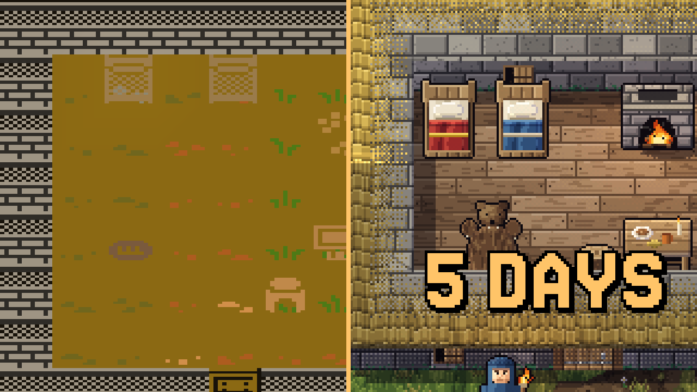
Hook pair, day
The night pair at noon: the control, to see how much the lamplight is doing.
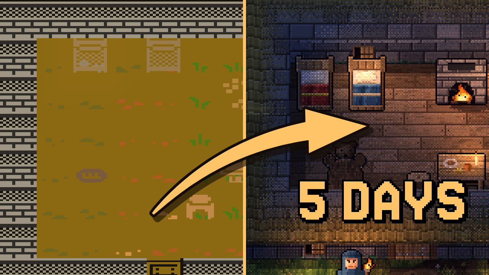
Arrow A · brush
Tapered curved brush stroke, filled gold, dark 14 px outline, hard offset shadow: the hand-drawn arrow most big gaming thumbnails use. Vector, so check-pixels skips its footprint and checks every art pixel around it.
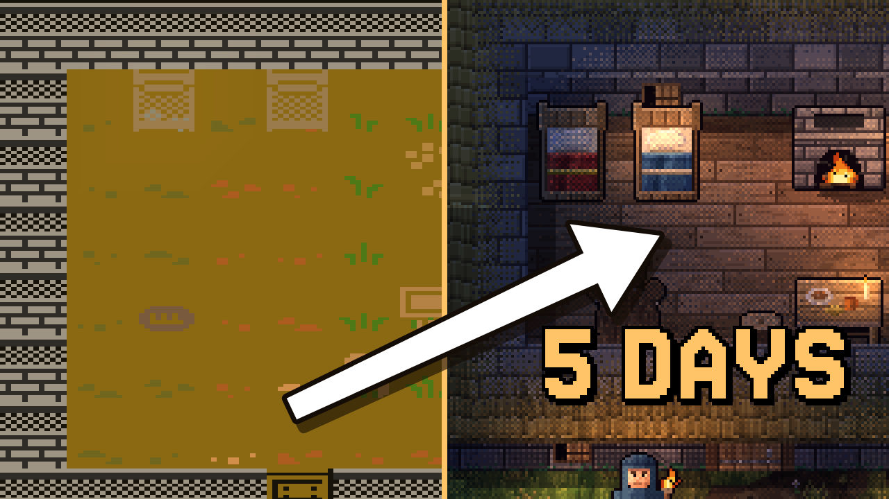
Arrow B · block
Straight white block arrow, outline and shadow, tilted up: the louder MrBeast-school cue.
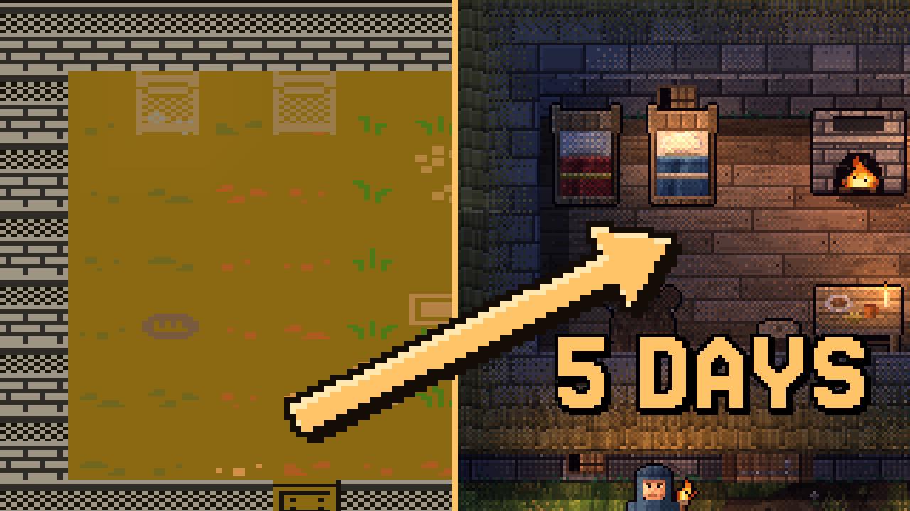
Arrow C · pixel
Placed on an 8 px grid in the same gold, one-pixel outline and drop shadow, so it belongs to the art rather than sitting on it.
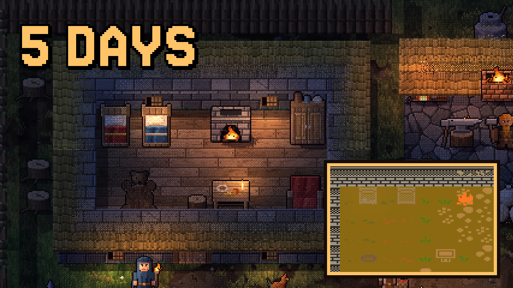
After full-bleed, before inset
The night village ×3 fills the frame; the glyph house sits in a framed corner like a picture-in-picture. Borrows the inset “old version” from engine-upgrade videos. The inset is small at 168 px.
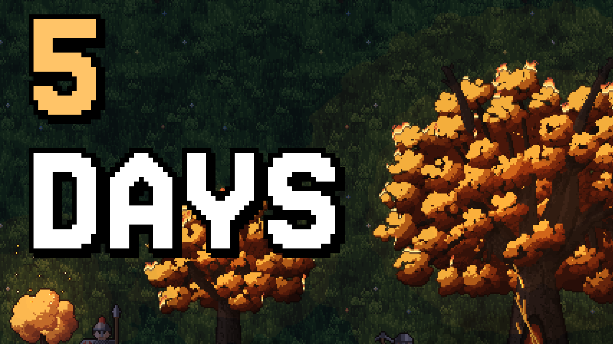
Big number
“5 DAYS” at ten pixels per font pixel over the emberwood grove; no before at all. Pairs with a title that already says “ugly”.
At feed size (168 px)
How it sits in search
Outline and script
The full script, shot list, Shorts backlog and recording list are on script.html
Written from the commit history of test/look-overhaul, with the commit beside every beat.
Shorts · 9:16
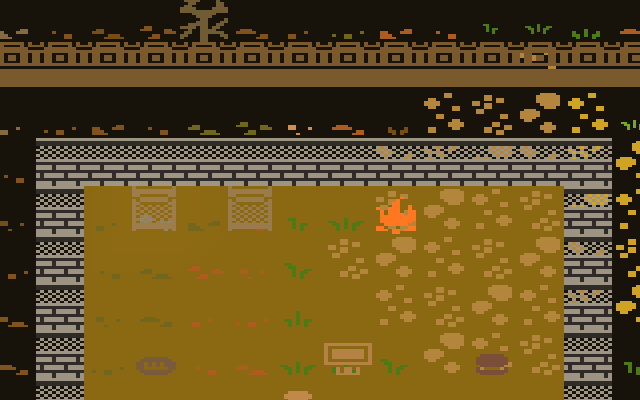
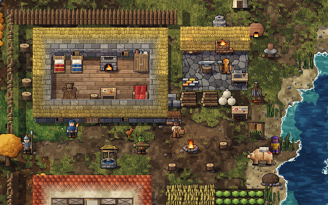
5 days.
“Same map. 5 days.” · 25 s
- 0–2 s: the split, caption only, no voice.
- Wipe top to bottom across four pairs: grass, shore, light, trees.
- VO last 4 s: “Full breakdown on the channel.”
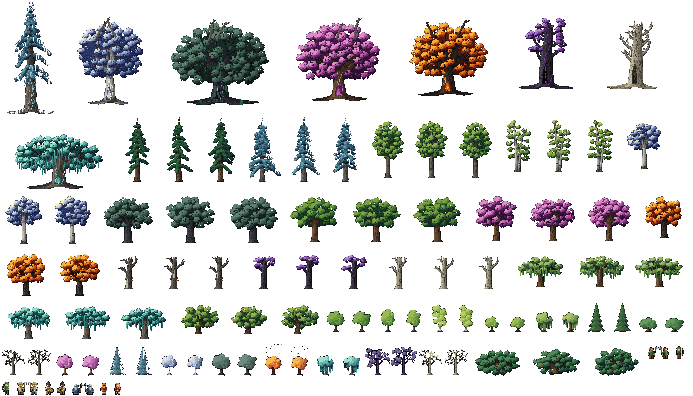
had a seizure
“My trees had a seizure” · 30 s
- Open on the flickering sway bug, full screen.
- VO: “Sub-pixel wind. Never again.” Fix: lean in whole art pixels.
- End on the calm forest in a gust. Loopable.
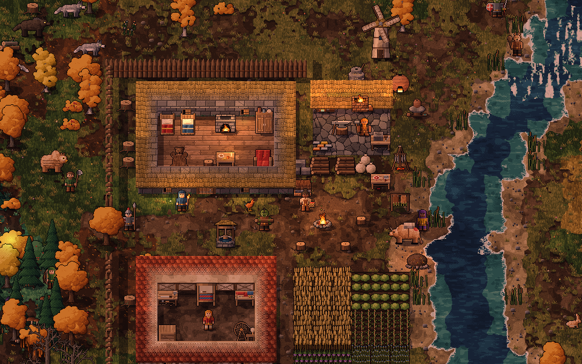
in 20 seconds
“Noon to midnight” · 20 s
- Pure timelapse of the day cycle, no VO, campfire sound.
- Caption counts the hours.
- Built to loop; ASMR-ish, for the pixel art crowd.
Evidence
YouTube autocomplete (public suggest endpoint, 26 Nov)
“colony sim devlog” is suggested but the top results have 70–550 views: an empty niche to rank in. Engine names dominate the rest; a WebGL game can't claim those, so the title leans on the confession, not the tech.
Comparable videos (YouTube search, 26 Nov)
| Video | Channel | Views | Takeaway |
|---|---|---|---|
| Every Pixel Art Game Has This Problem... | Barry's Dev Hell | 707k | Problem framing beats feature listing. |
| Next-Gen Pixel Art - Legacy Devlog #20 | aarthificial | 616k | Rendering technique is a proven draw. |
| Deferred Lights - Pixel Renderer Devlog #1 | aarthificial | 461k | Lighting alone carries a video. |
| Creating 3D Lighting for my 2D Game | JohnBrx | 90k | “my 2D game” + one technique, small channel. |
| My Indie Game is Ugly...Let's Fix That | Nerd Chomp | 76k | The “ugly” confession is title A's template. |
| How I Made My Horror Game Look 10x Better | AkulDev | 49k | Before/after title works for small channels. |
| DEVLOG - How I made my GAME LOOK BETTER in only 1 day | DevRatGames | 4.6k | A time limit alone isn't enough: the thumbnail has to show the change. |
Channel sizes weren't available without the API; the 4.6k vs 76k pair is the closest control: same idea, different framing. Sources: YouTube search results pages; suggestqueries.google.com (client=firefox, ds=yt); pixel-beef on light and depth.